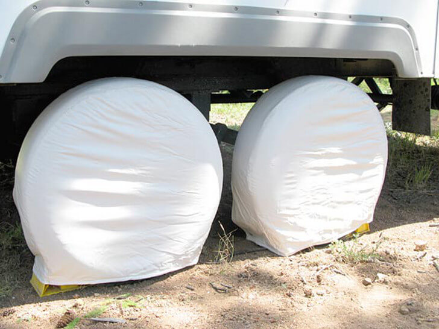
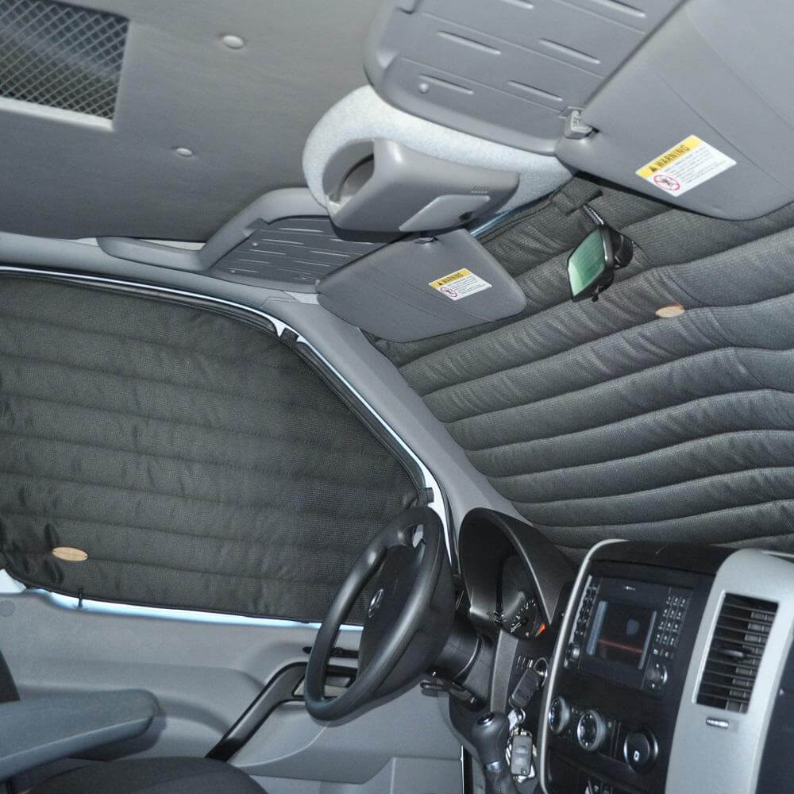

How to winterize rv: Step-by-step.
This is a more in dept step-by-step guide you can follow.Winterize Instructions
Things you need.- Antifreeze(Non-Toxic)
- Water heater by-pass kit
- Some sort of wand to clean the holding tanks
- Water pump converter kit
- Tools(Basic tools will do)
- Disconnect the outside water source.
- Next you need to drain the water that is left in your system. If you read your owner's manual, you should know where your low-point drains are located. There should be one for the hot water lines, one for the cold water lines and one for the fresh water tank. You will need to open the petcocks in order to drain as much water as possible from your pipes. Turn on all the faucets.
- There should be a drain on the outside of your water heater. Get out all the water from your rv through this drain.
- Bypass your water heater before you strat adding anything to your rv. One thing you don't want happening is having any remnance of anti-freeze getting into your water heater. Some rvs carry their own bypass that has already been installed. If your rv doesn’t come with one installed then you diy or have a professional install one for you.
- The next step is to add anti-freeze. This will ensure that your water lines don't get frozen while the rv is out in the winter cold. But before you do any of this, be sure to install some sort of water pump diverter kit or disconnect the inlet side of your water pump and just sit it inside a large bucket or where you have anti-freeze. At this point you need to turn off all the faucets and drains that were turned on earlier then turn your water pump. After the system is finally pressurized, make sure you go around to each faucet, turn them on hot till you start seeing antifreeze. Next, do the same thing for the cold water. Next you need to turn off the water pump then open all faucets.
Exterior and simple winetrizing guide
The complete guide to winterizing your rv is what my neighbors always ask me to write about. We all hate it when it comes time to winterize our rv. But it is always a skill needed when you own a rv that undergo bad winter conditions. None of us want to have a bad start to the camping season because we weren't prepared for winter blizzards.
First get rid of the water
First of all you need to have a plan set up to just get straighjt to it when the time comes. When it's winter time, you do not want any water to be left in the pipes. Leaving even the smallest amount of water in your pipes will cause said pipes to burst after they reach freezing temperatures. This in turn causes thousands of dollars in repair that could have been avoided. Water doesn't contract like some other liquids, instead, it expands. This means it will put a strain on the pipes until they burst. So make sure there is no water left in the pipes when your camper is set up for winter.
Try not to use anti-freeze
Back in the day, it was the norm to mix the non-toxic type of anti-freeze with the water in the winter. Anti-freeze has a much lower freezing point than water. Many people used that method in order to not having to do the whole draining procedure.
when the camping season comes around again, they would get rid of the anti-freeze and be good to go again. But there is a downside to doing this, not 100 percent of the anti-freeze will be drained, leaving anti-freeze residue in your pipes. Only the non-toxic version of the anti-freeze is used but this does not mean it is good for you. There is a way to avoid having your pipes burst, which is to drain the whole pipes or leave just a small amount of water which is not enough to expand and burst.
Get the exterior ready
One of the best things you can do is to have a service station check the roof, sidewalls, seams, windows of your rv. The objective is to reseal or re-caulk any holes or cracks which will stop any water from getting in where you don't want it to. Nobody wants to be hit with a high repair cost when spring time comes around.
I would advise in getting the rv manifacturer to suggest the brand and type of sealant to use in case your rv needs it.
How to store your Rvs

Doing everything necessary on the interior of your camper/rv will never be close to being enough to getting the exterior ready. The best option is to invest in a cover that was specifically made for your make and model. This cover will be responsible for protecting your camper against wind damage, bird poop and tree sap. It will also be very protective against extended exposure of ultraviolet rays.
Protect your tires
This might seem like a nobrainer, but many people forget to take the protection of camer tires during the winter season. Tire protection is just as important as any other precautions you will take for the upcoming winter. One of the best things you can do to protect your tires is to get tire ccovers.
Keeping your tire in top shape is essential whether you're driving a camper or any other type of motor vehicle. Once it's time to store your camper away, ensure that the right amount of air is in all tires by looking at the side of the tires. Use a tire pressure gauge to check. Once that has been done then it's time to place all your tire covers over the tires. This will protect your tires from the harsh winter season and also ultraviolet rays.
Before taking your rv out for the spring or summer season, be sure to check the tire pressure of all tires and put the necessary amount of air that might be missing. Tires lose pressure over time so it is always wise to check before using them again.
Thermal Curtains
One good option for a rv or a camper van is to purchase and install thermal curtains. these help to keep the temprature in the rv or camper at a nice and warm temperature which in turn helps to stop freezing temperatures from being trapped inside.
Close your vents
We all sometimes take the simplest things for granted, we might overlook the simplest things that can cost us so mch money down the line. This is why we need to make sure the little things are taken care of so we don't run into these types of problems.
Protect your exhaust
One pesky thing that will happen to your camper/rv is if you leave your exhaust pipes open, rodents might take up residents. So i have found out that most rv/camper tips are three inches in diameter so i have used pvc caps to cover them once winter roll in. this will ensure that said rodents will be choosing somewhere else to make their home. Nobody wants to get ready for a trip only to find that the exhaust is plugged and needs repair. Pvc caps can be found at any hardware store or online and they are super cheap. They cost between $.080 to $3 and it does not really matter which one you choose as long as it covers the exaust tips perfectly.
Get a furnace mesh
Another easy but important thing to overlook is the furnace. This is not really a winterizing chore, but if you have not done this as yet then doing it before the winter roles in will be well worth it. Once you have this in place, you will prevent wasps, birds and other pest from taking residents in your rv furnace. If this is not taken care of then there is no telling what will happen while your camper/rv is sitting during the winter.